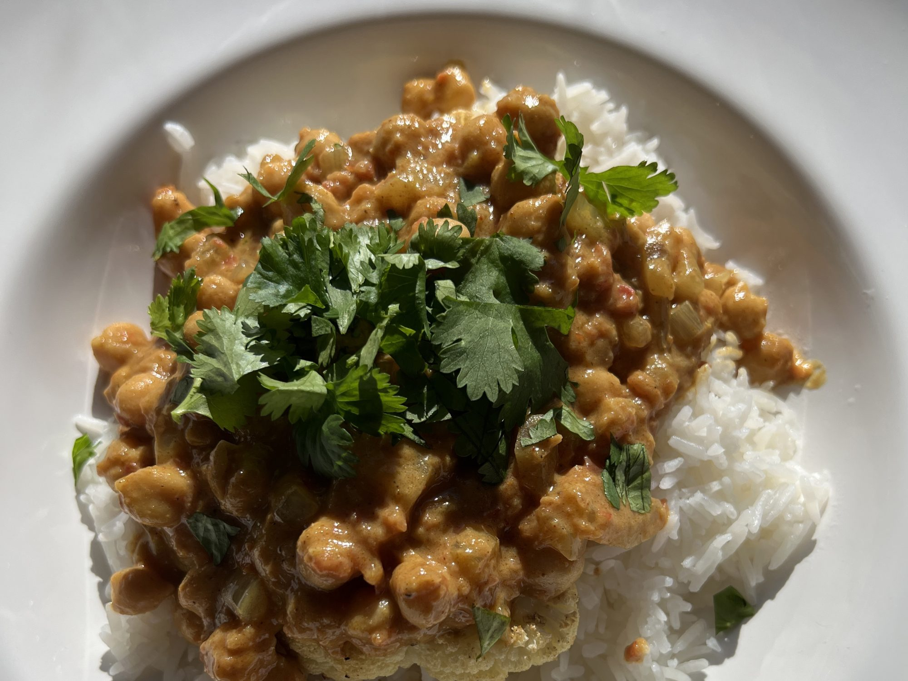

Delicious Chana Masala

Description
A delicious dish of chickpeas, onions, and tomatoes! You will love this
stuff! I suggest eating this with fresh fried naan.
Ingredients
- 1 tablespoon olive oil
- 1 large onion, chopped
- 2 cloves minced garlic
- 2 teaspoons grated fresh ginger
- 1 green chile pepper, chopped
- 1 tablespoon ground cumin
- 2 teaspoons paprika
- 1 teaspoon ground coriander
- 1 teaspoon garam masala
- 1 teaspoon ground turmeric
- ½ teaspoon ground cayenne pepper
- 4 cups chopped tomatoes
- 4 cups cooked chickpeas (garbanzo beans)
- ½ cup tomato sauce
- ½ cup plain yogurt
- 1 lemon, juiced
- ½ teaspoon salt